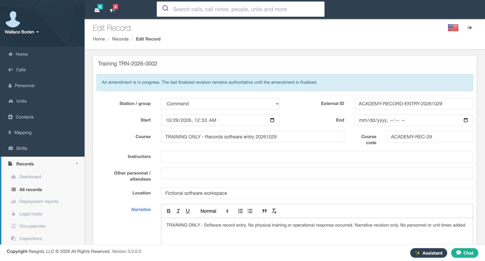
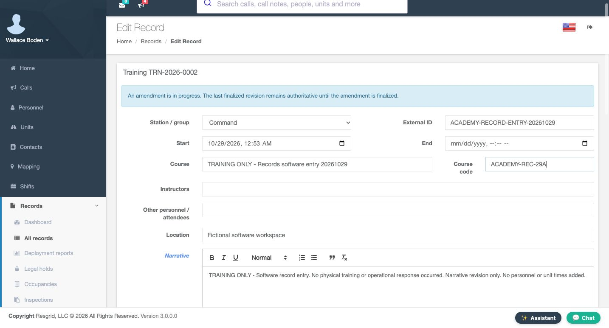
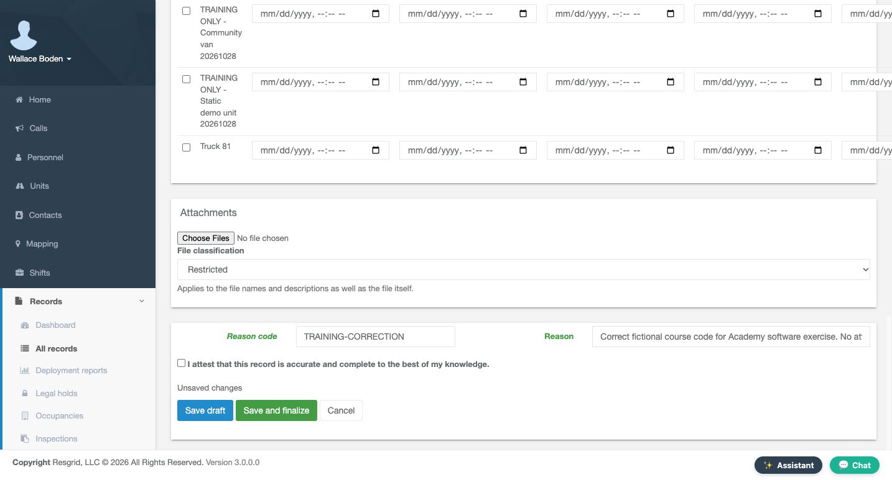
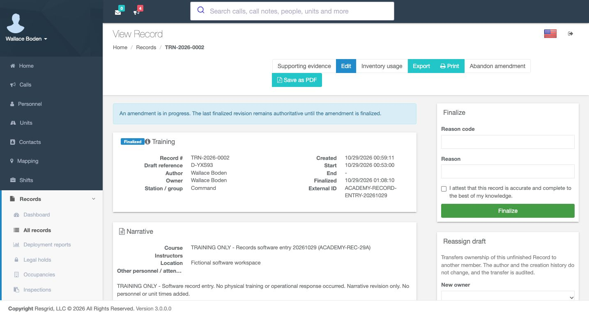
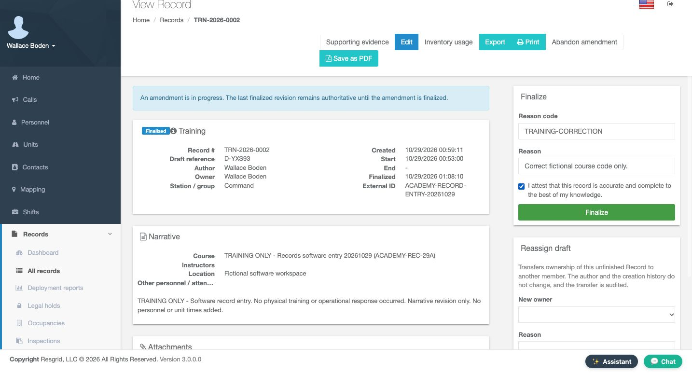
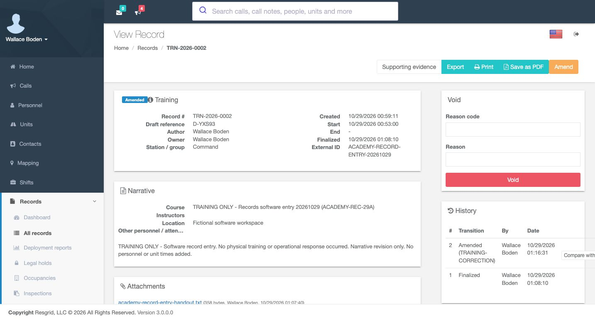
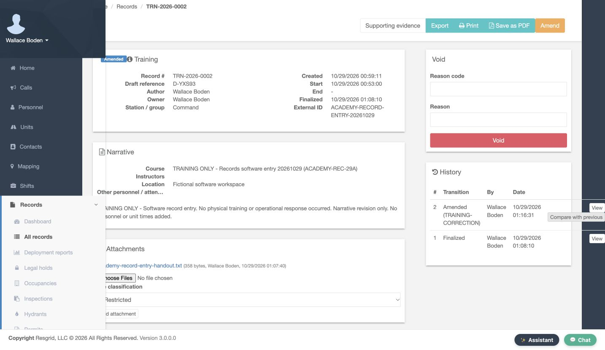
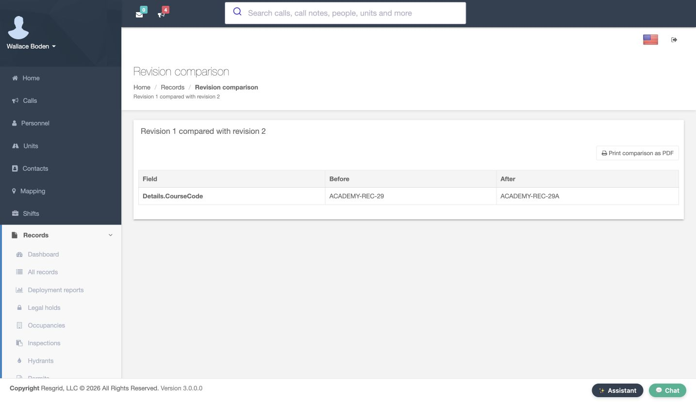
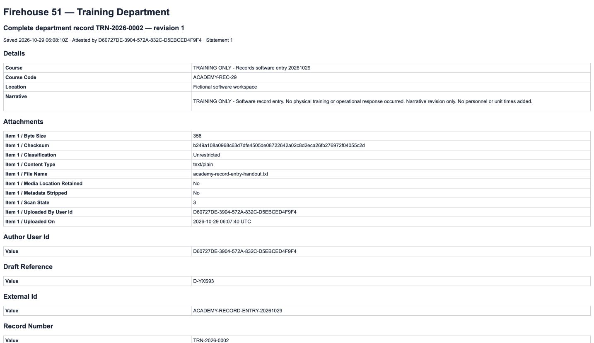

Core · Video walkthrough
Correct a finalized record and compare its revisions
Open an amendment, save a working correction, finalize it with a reason and attestation, then compare the change and inspect both saved revisions.
Before you begin
- An authorized Core session and an appropriate finalized record with Amend offered.
- A truthful, specific correction and the department's record-review procedure.
- A fictional training record for practice. The demonstrated correction changes only a software-exercise course code.
Chapters
- Verify the finalized record before amending
- Read the amendment working-copy warning
- Make the specific field correction
- Save the correction as a working draft
- Check the saved working-copy result
- Review the reason and truthful attestation
- Verify the amended identity and field value
- Open the comparison from the correct History row
- Read the actual before-and-after difference
- Open the amended revision's saved content
- Verify revision two's recorded details
- Choose the original finalized revision
- Verify the original value remains in revision one
- Keep corrections understandable across departments
Watch the walkthrough
Step 1
Verify the finalized record before amending
Open the intended record and verify its identity before making a correction. This Training example is Finalized, with record number T R N, twenty twenty-six, zero zero zero two, and draft reference D, Y X S nine three. Its Course entry ends with the code Academy, R E C, twenty-nine. Read the recorded author, group and narrative as well. This is explicitly a fictional software exercise. Once you have confirmed the intended record and your authority to correct it, choose Amend.

Practice
Verify the intended finalized training record, its identity and original course code before choosing Amend.
Step 2
Read the amendment working-copy warning
The editor identifies the same Training record and displays an important notice: an amendment is in progress, and the last finalized revision remains authoritative until the amendment is finalized. Read that distinction before editing. Station slash group, External ID, dates, Course, Course code, Location and Narrative are shown here. Opening this editor has not, by itself, replaced the finalized version with a newly signed correction.

Practice
Read the amendment warning and identify the Course code field without treating the working copy as a new finalized revision.
Step 3
Make the specific field correction
Edit only the field that needs correction. Here, Course code changes from Academy, R E C, twenty-nine, to Academy, R E C, twenty-nine A. The Course title, fictional workspace and software-only narrative remain unchanged. A focused correction is easier to review later than an unexplained rewrite of unrelated details. Check the new field value and the amendment notice before moving to the save controls.

Practice
Correct the fictional course code and verify the unchanged surrounding context and amendment warning.
Step 4
Save the correction as a working draft
At the bottom of the editor, review Reason code, Reason and the available save actions. This example uses Training Correction as its reason code. The attestation is still unchecked. Choose Save draft to retain the working correction without finalizing it. Save and finalize is a separate action. The complete reason and attestation will be reviewed again in the finalization panel before the amendment is signed.

Practice
Identify Reason code, Reason, the unchecked attestation and Save draft, then distinguish it from Save and finalize.
Step 5
Check the saved working-copy result
The reopened record shows the corrected Course entry ending in twenty-nine A, while the amendment-in-progress notice remains. Its existing Finalized badge does not remove that warning. Read the two together: a saved working correction and the authoritative finalized revision are distinct. Edit and Abandon amendment are available above, and the separate Finalize panel asks for a reason and attestation. This example continues with the intended correction rather than abandoning it.

Practice
Verify the saved course-code correction, retained identity and amendment warning before proceeding to Finalize.
Step 6
Review the reason and truthful attestation
In Finalize, the reason code is Training Correction and the full Reason says, Correct fictional course code only. Read the attestation before selecting it: the record must be accurate and complete to the best of your knowledge. This recorded attestation concerns the explicitly fictional software record, with no physical training or response claimed. Once the correction, reason and attestation are appropriate, choose Finalize to complete this amendment.

Practice
Review the complete reason and accurate attestation before deliberately finalizing the fictional correction.
Step 7
Verify the amended identity and field value
After finalization, the reopened record is marked Amended. The record number and draft reference are retained, and the Course entry still ends in twenty-nine A. Verify this actual returned state rather than assuming that an earlier draft save completed the amendment. Keeping the record's identity while retaining its revision history makes a correction easier for another authorized reviewer to follow.

Practice
Verify Amended, the retained record number and draft reference, and the corrected course-code value.
Step 8
Open the comparison from the correct History row
In History, read the numbered transitions. Revision two is Amended with the Training Correction reason code; revision one remains Finalized beneath it. The rows identify the actor and date. Use Compare with previous on the amended row to review what changed between those two saved versions. Verify the intended row before choosing the comparison action.

Practice
Identify the Amended and Finalized rows and choose Compare with previous for revision two.
Step 9
Read the actual before-and-after difference
Revision comparison explicitly says Revision one compared with revision two. Read Field, Before and After across the same row. Details dot Course Code changes from Academy, R E C, twenty-nine, to the version ending twenty-nine A. This comparison shows one changed field for this correction. Compare the actual values with the stated reason before drawing a conclusion about the amendment. This walkthrough is reading the comparison page; it does not perform a PDF export.

Practice
Read the revision pair and the CourseCode Before and After values from the actual comparison table.
Step 10
Open the amended revision's saved content
Return to the record and find revision two's Amended row in History. Choose View on that row to inspect its saved content. This is a different question from the comparison: the comparison identifies differences, while View opens the selected revision's complete rendered record. Keep the row number and transition together so you open the version you actually intend to inspect.
Practice
Choose the View link belonging to the Amended revision-two row.
Step 11
Verify revision two's recorded details
The opened page identifies the department, record number and revision two. Under Details, Course Code contains the corrected value ending twenty-nine A. The fictional location and truthful software-only narrative are retained. Attachments lists the recorded file metadata, including the exercise handout. Read the revision heading before treating a saved page as the current version or comparing it with another copy.
Practice
Verify revision two in the heading, the corrected Course Code and the retained software-exercise context.
Step 12
Choose the original finalized revision
Return to History again and find revision one's Finalized row. Choose View on that original row. The presence of an amended revision above it has not removed this earlier saved version from the history. Selecting the correct row lets an authorized reviewer inspect the original content alongside the later correction.
Practice
Choose the View link belonging to the original Finalized revision-one row.
Step 13
Verify the original value remains in revision one
The original page identifies revision one and retains the earlier Course Code ending twenty-nine, without the added A. Its software-exercise narrative and attachment metadata are still present. Reading both saved versions and their comparison makes the correction traceable: you can identify the original value, the amended value and the stated correction reason without rewriting the earlier saved snapshot.

Practice
Verify revision one and its original Course Code, then distinguish it from revision two's corrected value.
Step 14
Keep corrections understandable across departments
The same careful correction and revision checks can support authorized documentation in community paramedicine or mental health response teams, search-and-rescue organizations, security companies, wildland contractors and industrial emergency teams, as well as Fire and EMS departments. Use a specific reason, keep the attestation truthful and inspect the saved result. A working draft, a finalized amendment, a comparison and an earlier revision each serve a different purpose when explaining what a record said and how it changed.
Practice
Apply the identity, reason, attestation and revision checks to an appropriate fictional record for your own department.
Examples for your department
- Fire / EMS
- Correct an appropriate training record while retaining its original saved revision and a specific amendment reason.
- Community response
- Review an authorized documentation correction and its saved revisions using fictional practice data.
- Search and rescue
- Make a focused correction to mission-support documentation and verify the actual before-and-after values.
- Security
- Keep an authorized service-record correction understandable through its reason, transition and saved snapshots.
- Wildland
- Correct a documented exercise field while preserving the earlier record content for review.
- Industrial
- Review the original and amended versions of an emergency-team software exercise record.
Transcript
Download transcriptRead the complete transcript
Correct a finalized record and compare its revisions Audience: Authorized record authors, Department administrators, Records supervisors Verify the finalized record before amending Open the intended record and verify its identity before making a correction. This Training example is Finalized, with record number T R N, twenty twenty-six, zero zero zero two, and draft reference D, Y X S nine three. Its Course entry ends with the code Academy, R E C, twenty-nine. Read the recorded author, group and narrative as well. This is explicitly a fictional software exercise. Once you have confirmed the intended record and your authority to correct it, choose Amend. Practice: Verify the intended finalized training record, its identity and original course code before choosing Amend. Read the amendment working-copy warning The editor identifies the same Training record and displays an important notice: an amendment is in progress, and the last finalized revision remains authoritative until the amendment is finalized. Read that distinction before editing. Station slash group, External ID, dates, Course, Course code, Location and Narrative are shown here. Opening this editor has not, by itself, replaced the finalized version with a newly signed correction. Practice: Read the amendment warning and identify the Course code field without treating the working copy as a new finalized revision. Make the specific field correction Edit only the field that needs correction. Here, Course code changes from Academy, R E C, twenty-nine, to Academy, R E C, twenty-nine A. The Course title, fictional workspace and software-only narrative remain unchanged. A focused correction is easier to review later than an unexplained rewrite of unrelated details. Check the new field value and the amendment notice before moving to the save controls. Practice: Correct the fictional course code and verify the unchanged surrounding context and amendment warning. Save the correction as a working draft At the bottom of the editor, review Reason code, Reason and the available save actions. This example uses Training Correction as its reason code. The attestation is still unchecked. Choose Save draft to retain the working correction without finalizing it. Save and finalize is a separate action. The complete reason and attestation will be reviewed again in the finalization panel before the amendment is signed. Practice: Identify Reason code, Reason, the unchecked attestation and Save draft, then distinguish it from Save and finalize. Check the saved working-copy result The reopened record shows the corrected Course entry ending in twenty-nine A, while the amendment-in-progress notice remains. Its existing Finalized badge does not remove that warning. Read the two together: a saved working correction and the authoritative finalized revision are distinct. Edit and Abandon amendment are available above, and the separate Finalize panel asks for a reason and attestation. This example continues with the intended correction rather than abandoning it. Practice: Verify the saved course-code correction, retained identity and amendment warning before proceeding to Finalize. Review the reason and truthful attestation In Finalize, the reason code is Training Correction and the full Reason says, Correct fictional course code only. Read the attestation before selecting it: the record must be accurate and complete to the best of your knowledge. This recorded attestation concerns the explicitly fictional software record, with no physical training or response claimed. Once the correction, reason and attestation are appropriate, choose Finalize to complete this amendment. Practice: Review the complete reason and accurate attestation before deliberately finalizing the fictional correction. Verify the amended identity and field value After finalization, the reopened record is marked Amended. The record number and draft reference are retained, and the Course entry still ends in twenty-nine A. Verify this actual returned state rather than assuming that an earlier draft save completed the amendment. Keeping the record's identity while retaining its revision history makes a correction easier for another authorized reviewer to follow. Practice: Verify Amended, the retained record number and draft reference, and the corrected course-code value. Open the comparison from the correct History row In History, read the numbered transitions. Revision two is Amended with the Training Correction reason code; revision one remains Finalized beneath it. The rows identify the actor and date. Use Compare with previous on the amended row to review what changed between those two saved versions. Verify the intended row before choosing the comparison action. Practice: Identify the Amended and Finalized rows and choose Compare with previous for revision two. Read the actual before-and-after difference Revision comparison explicitly says Revision one compared with revision two. Read Field, Before and After across the same row. Details dot Course Code changes from Academy, R E C, twenty-nine, to the version ending twenty-nine A. This comparison shows one changed field for this correction. Compare the actual values with the stated reason before drawing a conclusion about the amendment. This walkthrough is reading the comparison page; it does not perform a PDF export. Practice: Read the revision pair and the CourseCode Before and After values from the actual comparison table. Open the amended revision's saved content Return to the record and find revision two's Amended row in History. Choose View on that row to inspect its saved content. This is a different question from the comparison: the comparison identifies differences, while View opens the selected revision's complete rendered record. Keep the row number and transition together so you open the version you actually intend to inspect. Practice: Choose the View link belonging to the Amended revision-two row. Verify revision two's recorded details The opened page identifies the department, record number and revision two. Under Details, Course Code contains the corrected value ending twenty-nine A. The fictional location and truthful software-only narrative are retained. Attachments lists the recorded file metadata, including the exercise handout. Read the revision heading before treating a saved page as the current version or comparing it with another copy. Practice: Verify revision two in the heading, the corrected Course Code and the retained software-exercise context. Choose the original finalized revision Return to History again and find revision one's Finalized row. Choose View on that original row. The presence of an amended revision above it has not removed this earlier saved version from the history. Selecting the correct row lets an authorized reviewer inspect the original content alongside the later correction. Practice: Choose the View link belonging to the original Finalized revision-one row. Verify the original value remains in revision one The original page identifies revision one and retains the earlier Course Code ending twenty-nine, without the added A. Its software-exercise narrative and attachment metadata are still present. Reading both saved versions and their comparison makes the correction traceable: you can identify the original value, the amended value and the stated correction reason without rewriting the earlier saved snapshot. Practice: Verify revision one and its original Course Code, then distinguish it from revision two's corrected value. Keep corrections understandable across departments The same careful correction and revision checks can support authorized documentation in community paramedicine or mental health response teams, search-and-rescue organizations, security companies, wildland contractors and industrial emergency teams, as well as Fire and EMS departments. Use a specific reason, keep the attestation truthful and inspect the saved result. A working draft, a finalized amendment, a comparison and an earlier revision each serve a different purpose when explaining what a record said and how it changed. Practice: Apply the identity, reason, attestation and revision checks to an appropriate fictional record for your own department. Examples for your department Fire / EMS: Correct an appropriate training record while retaining its original saved revision and a specific amendment reason. Community response: Review an authorized documentation correction and its saved revisions using fictional practice data. Search and rescue: Make a focused correction to mission-support documentation and verify the actual before-and-after values. Security: Keep an authorized service-record correction understandable through its reason, transition and saved snapshots. Wildland: Correct a documented exercise field while preserving the earlier record content for review. Industrial: Review the original and amended versions of an emergency-team software exercise record.